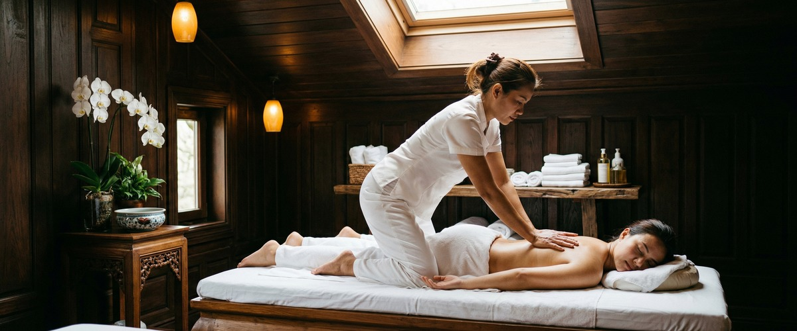
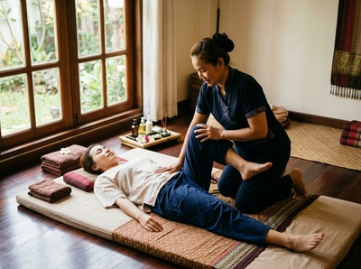
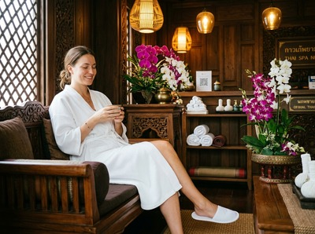

If you've been feeling flat, heavy, or emotionally wrung out, you're not imagining it, and you're far from alone.

Low mood — that persistent sense of sadness, fatigue, or disconnection — affects millions of people. Thai massage for low mood and mental wellbeing works directly on the physical drivers of how you feel, not just how your muscles feel. At Serendipity Massage Therapy & Wellness on Hope Street in Glasgow, we see this every day: clients arriving tense and withdrawn, leaving lighter than they have in weeks.
Low mood is a mental state marked by persistent sadness and reduced engagement with daily life. It affects an estimated 280 million people worldwide and exists on a spectrum — from occasional blues through to clinical depression.

The causes are rarely simple. Stress hormones — mainly cortisol — build up when the body stays tense for too long. Sleep suffers. Tightness gathers in the neck, shoulders, and chest.
The body and mind lock into a cycle that is hard to break alone. NHS guidance on low mood notes that physical symptoms often go hand in hand with emotional ones — fatigue, aching muscles, and poor sleep.
Treating the body is not a distraction from the mind. It is often the most direct route in.
The link between massage and better mood is well supported by research. A widely cited review in the International Journal of Neuroscience found that massage reduced cortisol while raising serotonin and dopamine — the chemicals most tied to mood and reward.
These are not small changes. Across the studies reviewed, serotonin rose by 28% on average and dopamine by 31%.
Thai massage uses assisted stretching, rhythmic pressure, and acupressure along the body's energy pathways. The stretching activates the parasympathetic nervous system, pulling the body out of stress mode and into genuine rest.
Swedish massage works through a similar process, using long, flowing strokes to ease tension in the surface muscles. It is often the gentler starting point for clients who are physically worn down.
Aromatherapy massage adds another layer. It combines high-grade essential oils with warm, grounding pressure, engaging the brain's emotional centre through scent.
You can book your session online and choose the treatment that feels right for where you are right now.
At Serendipity, every session begins with a brief conversation about how you're feeling — not just physically, but in yourself. Our therapists are trained in techniques developed by head therapist Jariya Malone. They understand that low mood lives in the body as much as the mind.

They adapt pressure and technique to match your energy and sensitivity on the day. For clients dealing with low mood or emotional fatigue, we often use Thai Oil Massage or aromatherapy massage.
Both combine the mood-lifting benefits of therapeutic touch with the grounding effect of warmth and scent.
Our studio is in Central Chambers on Hope Street — a short walk from Buchanan Street and St Enoch subways. It is well placed for anyone working across Glasgow's city centre.
A session here is not a luxury. It is an hour your nervous system genuinely needs. Reserve your appointment today and give your body the reset it's been asking for.
This treatment is especially useful for Glasgow professionals managing high-pressure work over long periods. It also helps people going through life changes — bereavement, relationship breakdown, or career stress. Those affected by seasonal low mood in the darker Scottish months often find it valuable too.
If you've noticed that your physical tension and emotional state have become hard to separate, that's a sign worth listening to. If you've been coping rather than recovering, regular sessions at Serendipity can shift that pattern. Book your first session here and start feeling the difference.
Research shows that massage reduces cortisol and raises serotonin and dopamine — the brain chemicals most linked to mood. Massage is not a clinical treatment for depression. But it does address many of the physical and chemical factors that keep low mood in place.
It works best as part of a wider approach to wellbeing, alongside sleep, movement, and professional support where needed.
Many clients notice a real shift after a single session — less tension, a calmer mind. For lasting improvement in mood and emotional resilience, regular sessions every two to four weeks work better than one-off visits.
Consistency matters because the physical benefits build over time.
Thai Oil Massage and aromatherapy massage are both well suited to emotional fatigue and low mood. The mix of therapeutic pressure, warmth, and chosen essential oils works on several systems at once.
Swedish massage is a gentler option if you are physically depleted and want a softer start. Your Serendipity therapist will help you choose based on how you feel on the day.
Yes, and many clients do exactly that. Our therapists are trained to hold space with care and without judgement. You don't need to explain or justify how you're feeling.
A quiet, warm, unhurried session is often what the body needs most when words feel like too much. If you have clinical depression and are under the care of a GP or mental health professional, massage works well alongside that support.
Yes. Low mood and physical tension are closely linked, and massage works on both at once. The muscle aching and fatigue that often come with emotional distress respond well to therapeutic massage.
It boosts circulation, lowers cortisol, and helps the body move out of stress mode. Clients often report sleeping more deeply after a session, which supports recovery further.
Our therapists use techniques developed by head therapist Jariya Malone, rooted in traditional Thai massage and adapted for consistent results. Every session is tailored to the individual.
For clients dealing with low mood, that means a session built around your nervous system's needs — not a fixed routine. The goal is a real physical shift, not just an hour of feeling briefly calm.